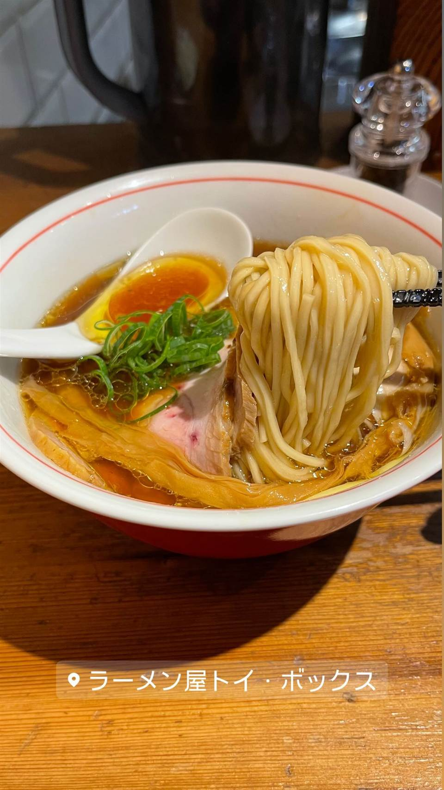

★18ラーメン屋 トイ・ボックス
浅草で6年修行した店主の、雑味のない澄んだ醤油ラーメン
ラーメン屋トイ・ボックス
三ノ輪橋にある醤油ラーメンの実力店。店主・山上貴典氏は浅草で6年間修業を積み2013年に独立、雑味のない澄んだ醤油スープでミシュランのビブグルマンに5年連続選出されている。店名は幼少期の「ラーメンを食べるワクワク感」を、お気に入りのおもちゃ箱を開ける瞬間になぞらえたもの。

TRIVIA
へえ、という話
- 店名「トイ・ボックス」は、幼い頃にラーメンを食べるワクワク感がお気に入りのおもちゃ箱を開ける時の気持ちと同じだったことに由来する
REVIEWS
みんなの声
96.690ラーメンDB3.79食べログ
「殿堂入り名店の淡麗鶏醤油」に注目
- 鶏油の効いた清湯スープと淡麗な鶏醤油の完成度を評価する声が多い
- ワンタンや味玉などサイドメニューの完成度も高く評価されている
- 醤油の効きがやや強いと感じる声や接客が不愛想という指摘もある
ラーメンデータベース 口コミ888件・総合143位・最新 2026-08
| 創業 | 2013年創業 |
|---|---|
| 系譜 | 浅草の店を皮切りに6年間修業を重ねた店主が独立して開業。 |
| 看板 | 醤油ラーメン |
| こだわり | 雑味のない澄んだ醤油スープが持ち味で、「都内最高峰の醤油ラーメン」と評されることもある。 |
| 掲載・受賞 | ミシュランガイド東京ビブグルマンに5年連続選出。食べログ「ラーメン百名店TOKYO」に2017・2018・2019と3年連続選出。 |
| 予算 | 昼 ¥1,000～¥1,999 夜 ¥1,000～¥1,999 |
| 定休日 | 月曜 |
| 場所 | 三ノ輪駅 東京都荒川区東日暮里1-1-3 |
| 注意 | 三ノ輪橋駅から徒歩約2分。 |
食べたもの：醤油ラーメン
NEARBY
近い店・同じ系統の店
-
 ★2
醤油・中華そば 大口駅
中華そば 髙野
元美容師の店主が作る、昆布水に浸した自家製麺の中華そば
昼 ¥1,000～¥1,999 夜 ¥1,000～¥1,999
★2
醤油・中華そば 大口駅
中華そば 髙野
元美容師の店主が作る、昆布水に浸した自家製麺の中華そば
昼 ¥1,000～¥1,999 夜 ¥1,000～¥1,999
-
 ★3
醤油・中華そば 池尻大橋駅
八雲（やくも）
骨を一切使わないのに深いコクの特製ワンタン麺
昼 ¥501～¥1,000 夜 ¥501～¥1,000
★3
醤油・中華そば 池尻大橋駅
八雲（やくも）
骨を一切使わないのに深いコクの特製ワンタン麺
昼 ¥501～¥1,000 夜 ¥501～¥1,000
-
 ★4
醤油・中華そば 六本木駅
入鹿TOKYO 六本木店
鶏・豚・貝・海老を別々に炊く独自のカルテットスープ
昼 ¥1,000～¥1,999 夜 ¥1,000～¥1,999
★4
醤油・中華そば 六本木駅
入鹿TOKYO 六本木店
鶏・豚・貝・海老を別々に炊く独自のカルテットスープ
昼 ¥1,000～¥1,999 夜 ¥1,000～¥1,999
-
 ★5
醤油・中華そば 千歳船橋
中華そば 西川
永福町大勝軒などで8年修行した店主の煮干しそば、百名店5年連続
昼 ¥1,000～¥1,999 夜 ¥1,000～¥1,999
★5
醤油・中華そば 千歳船橋
中華そば 西川
永福町大勝軒などで8年修行した店主の煮干しそば、百名店5年連続
昼 ¥1,000～¥1,999 夜 ¥1,000～¥1,999
-
 ★7
醤油・中華そば 祖師ヶ谷大蔵駅
世田谷中華そば 祖師谷七丁目食堂
柴崎亭店主が手がける、煮干しと小豆島醤油の中華そば
昼 ～¥999 夜 ～¥999
★7
醤油・中華そば 祖師ヶ谷大蔵駅
世田谷中華そば 祖師谷七丁目食堂
柴崎亭店主が手がける、煮干しと小豆島醤油の中華そば
昼 ～¥999 夜 ～¥999
-
 ★8
醤油・中華そば 鷺沼
麺処 懐や
中村屋仕込み、一度に2杯しか作らない淡麗系
昼 ～¥999
★8
醤油・中華そば 鷺沼
麺処 懐や
中村屋仕込み、一度に2杯しか作らない淡麗系
昼 ～¥999